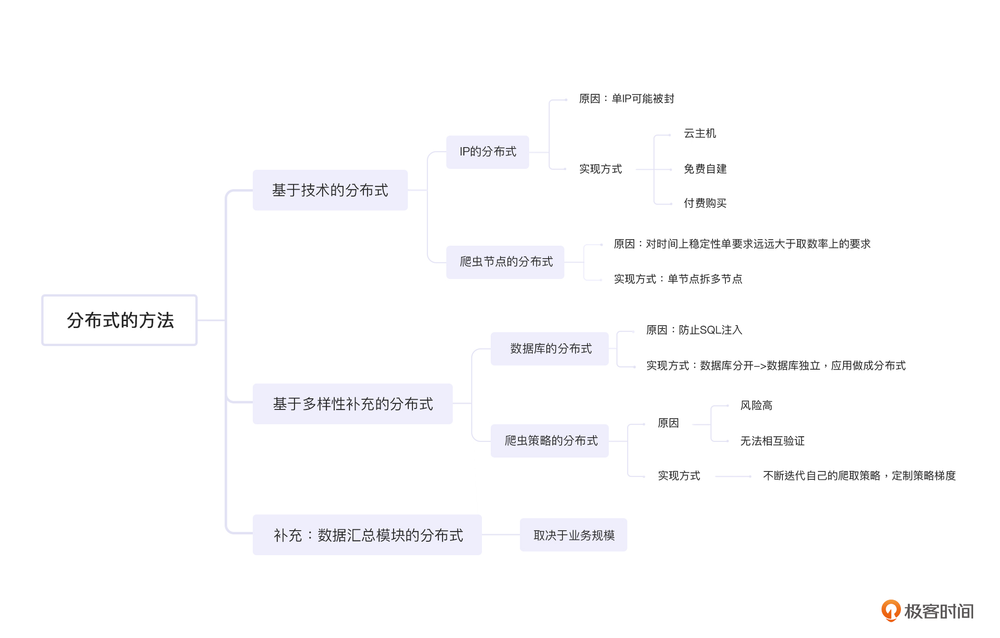

- 00 开篇词 如何突破“爬虫反爬虫”内卷之怪现状？.md.html
- 01 爬虫需求的诞生：我们是正经的软件工程师.md.html
- 02 爬虫的内卷和黑化：我们变得不正经啦.md.html
- 03 反爬虫的发展以及展望：我们也不是什么正经工程师.md.html
- 04 爬虫的首轮攻势：如何低调地拿到自己想要的数据？.md.html
- 05 反爬虫的应对之策：通用且基本的检测规则是什么？.md.html
- 06 爬虫攻势升级：分布式的意义在哪里？.md.html
- 07 反爬虫升级：如何判定你是个真人？.md.html
- 08 博弈的均衡：如何对抗道德的沦丧和人性的扭曲？.md.html
- 09 反爬虫概述（一）：高收益的后端能做哪些基本的事情？.md.html
- 10 反爬虫概述（二）：无收益的前端是怎么进行key处理的呢？.md.html
- 11 反爬虫概述（三）：前端反爬虫是怎么做信息收集的？.md.html
- 12 反爬虫概述（四）：前后端都不合适的时候如何进行处理？.md.html
- 13 反爬虫基础理论：这是唯一一节严肃的纯理论课.md.html
- 14 低耦合：如何快速下线反爬虫系统？.md.html
- 15 规则引擎：如何快速响应突发的爬虫需求？.md.html
- 16 验证爬虫：我到底要不要百分百投入？.md.html
- 17 招聘篇：如何写一个合适的JD？.md.html
- 18 如何搞定老板（上）：如何编造虚无缥缈的OKR？.md.html
- 19 如何搞定老板（中）：如何组建团队.md.html
- 20 如何搞定老板（下）：团队考核怎么做？.md.html
- 加餐 反爬虫的专家级鉴别力：用户习惯检测.md.html
- 春节加餐01 破解还是不破解，这是一个问题.md.html
- 春节加餐02 真实世界里，小心屠龙勇士变恶龙.md.html
- 春节加餐03 低调驶得万年船.md.html
- 答疑课堂 爬虫反爬虫调试对抗技巧以及虚拟机详解.md.html
- 结束语 达到理想不太易.md.html
- 捐赠
06 爬虫攻势升级：分布式的意义在哪里？
你好，我是DS hunter。
上一讲，我们讲到了反爬虫做为一个合格的保安，会尽力对爬虫进行拦截。当然，不遗余力地拦截，从某种意义上来说也不一定是最优解。
关于最优解问题我们会在后续探讨。今天我们主要看一下：当保安尽力拦截爬虫的时候，爬虫方是怎么处理的？
这里，我就先从基础的爬虫思路给你引入。
爬虫基础思路
一些做过爬虫的人可能都知道，网上主要有两种爬虫思路。
第一种是，你要尽可能少爬一点，避免把服务器爬挂了。比如你的QPS（Queries-per-second，每秒查询率）本来是100，那么你尽量放到50。
而另一种流派则认为，反爬虫会根据单个IP的访问请求来统计你的请求是否均匀。如果不均匀，例如只请求价格接口，那么他会直接封锁你的IP。为了避免这一情况，你应该多请求一些与你无关的接口。这样你的QPS如果本来是100，那么实际上会扩大到500甚至更多。
这里可以注意这样一点，如果你的QPS本来是100，那么根据方案一， 你应该缩小到50。根据方案二，你应该扩大到500。可是，两者相差了十倍之多，到底哪个是正确的呢？
这里就要引入一个几乎所有的爬虫教程都会提到的词：分布式。似乎不做分布式，爬虫就不能称为爬虫了。那么，我们为什么一定需要分布式呢？还是说，仅仅是别人这么说了，我们就忍不住照做，慢慢成为了一种习惯？
为了避免无理由的直觉，我们先看一下，分布式是什么，以及它给我们带来了什么样的效果。了解了这两点，我们要选择哪种爬虫思路的问题，也就迎刃而解了。
爬虫思路中的分布式概述
分布式，顾名思义，就是使用多台机器一起工作。不管分布式的定义多么复杂，实际上它只是一个简单的分散作业而已。当一个技术很简单的时候，我们不要刻意去把它弄复杂，这样对解决问题是没有帮助的。接下来我们就看看在爬虫抓取思路的各个部分，是怎么做到分布式的，以及各个部分的分布式，又有什么样的作用。
技术分布1：IP的分布式
单IP可能被封，这个是很多人上分布式的核心理由，也是关键理由。我们在05讲中也提到过，封锁IP是反爬虫的基础技能，而分散式的IP自然就成为了爬虫的核心技能。获取多个IP地址的方法非常多，但是总的来分类无非就两种，一种是付费购买，一种是免费自建。
我们先看付费购买。事实上，不同费用下的IP质量差距很大。低价的IP有很多缺点，例如多人公用，可能这个IP早就在各大站点被拉黑了，但是你依然要为它付费——即使并不是很贵。但是高价的IP也不见得就好到哪里去，甚至有的没有隐藏端口，对方扫描一下就知道是个代理。这种情况下，我们就要货比三家了，不能一概而论。
接下来我们来看免费自建。免费自建看起来IP免费了，但是设备的费用可能让你有更多的支出。我们假设，你使用的是ADSL（Asymmetric Digital Subscriber Line，非对称数字用户线路）。那么设备分布在各个地方，除了设备本身的费用，还要考虑设备万一出了问题，需要去维修的费用。你看，正好印证了一句话：免费的就是最贵的。不过，也就是因为这么多的成本输出，才让它的稳定性更好。
此外还有一种是云主机。目前各大厂商都有自己的云主机服务了，IP也足够分散。但遗憾的是，这些IP基本上都上了各个大厂的黑名单，而且是整段拉黑。因此云主机是可以使用的，没有问题，但是还是要配合代理使用，才能实现IP的分布。
技术分布2：爬虫节点的分布式
爬虫节点的分布式能有效提升系统稳定性。而完成爬虫节点分布式的手段，就是单节点拆成多节点。
爬虫系统对于稳定性的要求肯定没有线上系统的要求那么高，但它有个特殊的地方，那就是对时间上稳定性的要求远远大于取数率上的要求。
这里我给你补充一下取数率的概念。假设，你需要1000个数据，实际上拿到了900个，那么取数率就是90%。不过业务方也没指望过拿到100%的数据，所以这个低一点没关系，不要太过分就行。你还记不记得我们在04中提到过，爬虫不要爬100%的数据？也就是说，我们在选定爬取数据范围的时候已经舍弃了很多了，这里再少一点，也不是什么大事。
而我说的时间上的稳定性，就是业务期望每天都能拿到数据的意思。假设十天里面有一天是拿不到数据的，这样虽然稳定性的数值也是90%，却是业务方无法忍受的。
也就是出于对时间稳定性的要求，我们才要进行单节点拆多节点。因为多台机器挂一部分，影响的是取数率。而单台机器挂一定的时间，影响的是时间稳定性。我们刚刚说过了，取数率的重要性低于时间稳定性，因此拆多台是划算的。再配合前面说的代理，取数率的稳定性也提升了。这样，时间稳定性和取数率，都有了一定的保障。
以上两个方法谈完之后，你应该会发现：分布式，无非就是两点，一个是最前端的代理层，也就是IP地址要分布，避免被单点封杀；一个就是应用层，也就是爬虫机要分布，避免在物理上集中出现问题。那么，还有别的要分布的吗？
这个就取决于我们对分布的定义了。如果“多样性”也算是技术上的一种分布的话，那么，我们还有两个地方可以分布，一个是数据库，一个是爬虫策略。
补充1：数据库的分布式
我们先来看看数据库的分布式。这里，我会给你创设一个反爬虫方反击的情境，你可以先看一下：
数据库是反爬系统反向攻击的大头。其中，SQL注入则是重灾区。- - 做这一行的都知道，普通用户在浏览器上做的请求，是当场消费掉的，不存在存储问题。那么如果在响应中存在SQL注入，目标就十分明确了：只要成功，一定是爬虫机。只要失败，一定是普通用户。100%无误伤，这对于反爬虫来说简直是橙色级别的武器。- - 因此你会发现一个很可笑的事情：一个做爬虫的人，居然还要防止SQL注入，这太可怕了。- - 尤其是对方可能趁你不注意忽然改版，即使你调试的时候没有SQL注入的响应过来，等你上线之后，响应随时可能改变。- - 这时候，你做为一个爬虫工程师，居然要请求公司的安全部门帮忙给爬虫程序做SQL注入。更可怕的是，安全部门还不一定有工具可以使用：这个世界哪有人写爬虫的SQL注入工具呢？- - 而且这种事情，即使被坑了，你还不方便起诉：“法官大人，我被SQL注入了，对对对，因为我爬别人，然后拿到的数据有问题……嗯什么我为啥要爬别人？ 嗯嗯这个……”- 那面对刚刚说的这个情境，你是很难走法律流程解决的，只能吃个哑巴亏。
既然如此，那么一个比较折中的方案就是，数据库分开。如果跪了，那就跪一个，别全跪。那，具体要怎么做呢？
首先，我相信你是不会用公司的数据库服务器直接部署代码的……因此一定是外部的机器。这时候想必你一定会忽然恍然大悟：我懂了，要用分布式数据库。这个想法怎么说呢，也不是错的，其实不考虑成本，分布式数据库也许是最优解，注意我这里在强调成本。
后续的课程里，你会不断地碰到“成本”这个词，这是反爬虫的核心之一。我们要不断地把反爬虫问题转换成ROI问题。同样，对于爬虫来说，成本也是核心考虑因素之一。如果数据库的分布式成本太高， 有没有曲线救国的办法呢？
答案当然是有的，那就是数据库独立，把应用做成分布式，然后各自独立部署数据库。但是这里，我们又要如何把数据集中起来呢？
别急，我给你补充两种方式：一种是节点推送，一种是从中心去抓。两者各有利弊，建议使用第二个方案。
这里有两个理由：
第一，节点推送的话不可靠。有些情况下，中心节点性能顶不住了，这时候谁也不知道知道哪个节点可能忽然抽风了推一堆数据，一不小心就能把自己打挂。
第二：如果是推送，那么你要再写一个推送代码。但是如果是抓……额， 你本身就是爬虫工程师……把爬虫代码再部署一次就可以了。你看，是不是很省事？
补充2：爬虫策略的分布式
这里，我们就要从整体的战略部署上聊聊了。有人可能会说：爬虫策略哪有什么分布式可言，无非就是多样性而已。是的，这里主要讲的是多样性，但是用分布式这个词绝对不是偷换概念。你要考虑的是，你的多个节点，是统一行动的吗？我们假设你所有的节点都是统一行动的，爬取策略完全一致，那么，这样会导致两个缺陷：
- 鸡蛋放在一个篮子里，要打碎就全碎，一个不剩，风险极高；
- 策略没有梯度，无法互相验证，也无法提供送死的炮灰。
我们一个一个来看。
第一个，鸡蛋放在一个篮子里。这个很好理解，你的所有节点策略都完全相同，那么如果对方反爬虫工程师发现了你，他不管什么时候，只要成功封锁你一次，就会在时间上影响你的爬取率。
刚刚我们提到过了，取数率低并不是大事，但是时间上如果受到影响，对业务影响无疑是巨大的。因此，绝对不能容忍这种事情的发生。
第二个，策略没有梯度，无法互相验证，也无法提供送死的炮灰。这里的互相验证，主要体现在，你如何知道自己被反爬发现了并已经被干掉了？一个很好的办法就是多个节点使用不同策略来进行抓取，一旦一个策略被发现并封锁了，那么其余的策略可以提供验算功能。
当然，如果你使用多个策略频繁抓取同一个接口，会对对方集群造成大量的负担，这是不合适的。所以你可以适当交叉，并非每个策略交叉都完全覆盖，这样实际增加的请求量并不会翻倍。
此外，“送死的炮灰”是什么意思呢？
对于一些小的爬虫团队来说，这是没有意义的，但是对于大型爬虫团队来说，这是必须的。
要知道，大型爬虫团队通常会面对大型反爬虫团队，而他们如果找不到爬虫，就会拼命检测每一个角落，直到找到蛛丝马迹把你干掉为止。这个时候，你可以考虑不断迭代自己的爬取策略，然后定制一个梯度，针对旧版本的策略，可以有意制造一些错误，让对方干掉自己。
这样，反爬团队的KPI得以完成，他们也许会去开个香槟庆祝一下，那你就可以让低调的爬虫默默地去取数据了。
记住，不要把敌人逼到绝境，要让他们过得开心。这样，他们才不会和你拼命。
数据汇总模块的分布式？
说完了爬取过程中所有的分布式场景后，你会发现：做爬虫，几乎所有的代码都要分布式，任何一个地方都不能集中。目前，只有一个地方还在集中，那就是爬取后的处理，也就是数据汇总模块。那么，这个模块还要不要分布式呢？
事实上这取决于你的业务规模。
举个例子，假设你的爬虫团队不是一个业务团队，而是一个爬虫中台，那么你的数据其实并没有太大的必要集中到一起。集中了反而提升了复杂度，降低了稳定性，还降低了效率。
如果业务需要访问数据，你完全可以提供一个数据访问层，使用的时候再去访问各个节点的数据，而不是汇总在一起随时查取。这样不但提升了稳定性，还降低了法务风险：毕竟数据没有集中存储，回头谁知道那些爬虫节点归谁呢？
而不同业务方虽然共用数据访问层，但是每个人都可以有一个自己的访问节点，这个节点做成分布式，可以有效避免业务间争抢资源，导致某个业务拉取数据的时候所有业务效率都变慢。
不过，如果你的业务没有这个规模，只有一个业务需要爬虫，那么就完全没有做成分布式的必要了，这样只会凭空增加复杂度。
重新定义爬虫基础思路
最后，让我们回到开头的问题：关于QPS，我们应该增加，还是减少呢？
原则上，我们当然是要减少QPS，避免对对方机器造成负担。但是实际上因为分布式的问题，加上可能有交叉验证，100的QPS实际上增加到120是一个不错的平衡点。再增加就是损人不利己的行为了，无疑是坑害双方，是一个严重的不智之举。
此外，如果你评估对方机器承受自己的上限是100，那么对业务评估就要按照80来评估，避免对方性能下降。
最后，因为分布式可以随意调度，当检测到对方机器响应下降的时候，一定要尽量减少节点，避免导致对方崩溃。目标集群就像洗衣机里的卫生纸一样，你把他卷死，自己的衣服也白洗了——多累啊，是不是？
所以，我们的QPS可以控制在一定的范围内上下浮动。
向下，只要调整单个节点爬取阈值，或者停掉部分节点，就可以实现；而向上，就要加大单节点的爬取上限，如果扩展性好，也可以增加节点。
至于什么时候向上，什么时候向下，就要取决于对方服务器压力，以及业务需求等等各方面的因素，并尽可能保守，能向下就向下，避免上得去下不来。
这个答案，就是分布式告诉我们的，也是分布式帮我们实现的。
小结
今天，我们从爬虫的基础思路入手，讨论了所有的分布式。其中包括两大类，第一类，也就是技术类的分布式，类似IP的分布式以及爬虫节点的分布式。第二类，是我们基于多样性的考虑进行的分布式补充，包括数据库的分布式以及爬虫策略的分布式。
除此之外，我们还讨论了爬取后的数据汇总环节采取分布式的必要性。总结起来就是，根据自身的业务规模，有多大本事，就揽多大的活。

最后，我们也重新定义了爬虫抓取数据的基础思路：不一味地多爬或少爬，控制在一定范围内浮动，才是最优解。
我们可以看到，在分布式这个大杀器下，爬虫能够很好地隐藏自己，并默默地执行自己的任务，就像无孔不入的间谍一样，即使被抓一部分，也不影响自己完成大部分任务。看起来，反爬虫系统似乎一筹莫展，无法应敌了。
事实上真的是这样的吗？别急，又到了反击的时间了。
下一讲，我们就说说，反爬虫是如何应对这种看似无解的局面的。
思考题
好了，又到了愉快的思考题时间，还是三选一的老规矩，记得保密脱敏哦：
- 分布式是必须的吗？有没有可能一些爬虫根本不需要分布式？
- ADSL重新拨号会更换IP，那么你知道这样做的缺点是什么吗？会导致什么后果？
- 分布式会导致成本的上升，这部分预算你打算如何向老板解释呢？
期待你在评论区的分享，我会及时回复你。反爬无定式，我们一起探索。
© 2019 - 2023 Liangliang Lee. Powered by gin and hexo-theme-book.